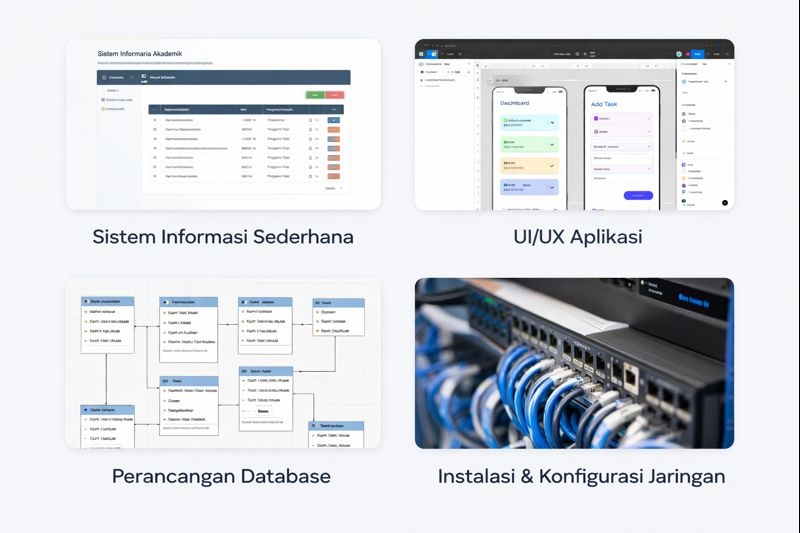

Selamat Datang di Portofolio Saya
Halo! Saya Aninda Putri Dewi Musarofah, seorang mahasiswi Universitas Pamulang yang tertarik pada pengembangan diri, kreativitas, dan pembelajaran
Website ini berisi informasi tentang saya, pengalaman, serta karya yang pernah saya buat.
Profile Saya
Nama: Aninda Putri Dewi Musarofah
Deskripsi: Saya adalah mahasiswi Program Studi Sistem Informasi di Universitas Pamulang. Saya memiliki ketertarikan pada pemanfaatan teknologi informasi dalam mendukung proses bisnis dan pengembangan sistem. Terbiasa mengerjakan tugas berbasis analisis, perancangan sistem, serta penggunaan teknologi digital.
Keahlian: Instalasi dan konfigurasi komputer (hardware & software), jaringan komputer (LAN, WAN, WI-FI), Konfigurasi IP Address, subnetting, dan routing dasar, Perakitan dan Perawatan komputer.
Misi: Mengembangkan kemampuan di bidang teknologi informasi, khususnya sistem informasi dan jaringan komputer, serta menerapkan ilmu yang saya miliki untuk menciptakan solusi digital yang bermanfaat dan efisien.
Karya & Project
Berikut adalah beberapa proyek yang telah saya kembangkan atau kontribusikan:
- Sistem Informasi Sederhana: Mengembangkan sistem informasi berbasis web untuk kebutuhan akademik/tugas kuliah.
- Perancangan Database: Proyek untuk merancang dan mengelola database untuk aplikasi bisnis atau akademik.
- Proyek Jaringan Komputer: Kontribusi dalam konfigurasi jaringan dan troubleshooting untuk lingkungan kampus atau perusahaan kecil.
- Integrasi Teknologi Digital: Pengembangan alat sederhana untuk integrasi data dan analisis dasar.
Apabila ingin melihat kode atau demo proyek, jangan ragu untuk menghubungi saya melalui halaman Kontak!
Koleksi Media
Berikut adalah koleksi gambar, video, dan dokumen tentang saya:
Gambar: Foto Profil
Video:
Audio:
Dokumen: CV Aninda
Unduh CV Aninda (Placeholder)Curriculum Vitae lengkap saya, termasuk pengalaman dan pendidikan.
Informasi & Kontak
Berikut adalah informasi lebih lanjut tentang saya dan cara menghubungi:
Informasi Pribadi
- Alamat: Pamulang, Tangerang Selatan, Banten, Indonesia
- Email: anindaaja6@gmail.com
- Telepon: +62 859-3035-7832
- Instagram: anindaptri_
Hubungi Saya
Jika Anda tertarik dengan karya saya atau ingin berkolaborasi, silakan isi form di bawah ini atau hubungi langsung via email.